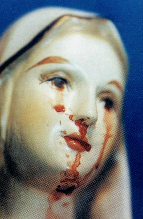

| Build an Online Photo Album | Try Blogging for FREE |
 THE PRESENT
- In several places of the world, images of OUR LADY weep!
But, why do our SACRED MOTHER’S images shed tears?
THE PRESENT
- In several places of the world, images of OUR LADY weep!
But, why do our SACRED MOTHER’S images shed tears?
Remember that, in Akita, Japan, besides the messages and teaching that VIRGIN MARY transmitted to Sister Agnes in benefit of all us, a small image spilled tears of blood copiously; also OUR MYSTIC ROSE LADY'S image in Italy, on several occasions wept; and now in Naju, the VIRGIN SACRED MOTHER'S image in South Korea, weeping tears... And this time, for no one to have doubt and malicious thoughts, imagining it to be of a plot, it was truly a spetacular event. During more than 700 days the image wept and spilled tears of blood, in the presence of laymen, ecclesiastical authorities, men, women, children and specialists in many areas, including collecting the blood and examining the precious liquid, verifying it to be human blood. From June 30, 1985 to December of 1992, the world had enough time to check that those were true tears, that they translated a feeling of sadness, because of the unworthy behavior of many of HER children.
But finally, why is our SACRED MOTHER weeping, spilling tears even of blood?
Frei Raymond Spies, spiritual director of Julia, with the image spilling tears of blood.
MEANING OF THE TEARS - Humanity is not truly that preciousness idealized by
the CREATOR, weaknesses dominate the people's hearts,
causing in many opportunities them to commit the evil that they
don't want to practice.
However, it is not licit to simply accept a situation for more difficult than it is, without reacting, letting that the things happen without respect for the good morals of the family and of the religion, without a undertaking a firm and resolved resistance; or to allow that the facts happen for accommodation and convenience, seeking to consolidate positions that are ephemeral, that don't bring any interior peace and any profit for the spirit.
We know however, that is not an
easy task to create a contrary force to combat evil when it grows
and becomes overpowering of souls, devastating and neutralizing
the character and the faith of persons, because being an
invisible potency, to be combatted efficiently doesn't only
requeire persistence and the people's perseverance, above all it
demands Divine help. To get it, is necessary that the
people have courage and disposition for look for it, prostrate of
knees and lowly to ask the indispensable aid of GOD, that
in all occasions will never fail for those that appeal to the LORD,
because without which, people don't have any means to win against
the forces of the evil.
that the
people have courage and disposition for look for it, prostrate of
knees and lowly to ask the indispensable aid of GOD, that
in all occasions will never fail for those that appeal to the LORD,
because without which, people don't have any means to win against
the forces of the evil.
In June of 1987 VIRGIN MARY delicately explained to Julia, the reasons for HER tears: "My dear daughter, my tears are for the humanity's constant failure in not loving GOD as HE deserves and the people to love each other mutually like He himself taught us; also because of loathsome abortion that kills a countless number of babies daily, murdering innocents in their mothers' wombs, for cowardice, wickedness and stingy satanic pleasure, and still, because of the many souls that refuse to be sorry for their sins, not interested in seeking a means for their conversion and that, with the risk of their own eternal condemnation".
We should have in mind, that OUR LADY is truly our Mother, which intercedes with GOD for our benefit, along with HER Divine SON JESUS and always gets the graces that we need for our life.
In that way, if we want to alleviate a little the intensity of the personal selfishness and we look to HER, resolved to console HER Divine and IMMACULATE HEART because of humanity's many sins, recognizing the countless motherly benefits that she gets for the lives of all of us, will get to surely we dry a little the precious tears that to come of HER affectionate and SACRED HEART OF MOTHER.
LIVING PICTURES - For this reason, as an unforgettable memory to be
recorded inside the spirit, we present impressive pictures of our
BLESSED MOTHER'S tears.
Is it not reasonable to make the decision to dry them?


PERFUMED OIL
- After the image ceased spilling tears from its tiny body, mainly from the head, among the hairs, without any openings,
seeped a precious and agreeable perfumed oil, that impregnated
the whole Chapel of Naju, with a pleasant and soft scent of
roses. This phenomenon happened until October of 1994. Then it
ceased, the following years until mid 1998, the people that
accompanied Júlia in the prayer of the Rosary testified that it
was common to smell the same scent of roses flooding the whole
enclosure completely.
OUR MOTHER'S REASONS - With this sensational intervention worthy of the
greatest respect and adoration, the BLESSED VIRGIN wants
to wake up humanity of the numbness of indifference, of the
disbelief, of the spiritual fading and of the sensible lack of
the things of the spirit, stimulating people to practice the
teaching of the Gospel and to revitalize the traditional
Christian faith. SHE wants us to begin to live a life of
prayer, in humility, love to GOD and neighbor, so that we
can participate in a new age of harmony and peace in CHRIST'S
Kingdom.

 Come Back to the
Backward Page
Come Back to the
Backward Page